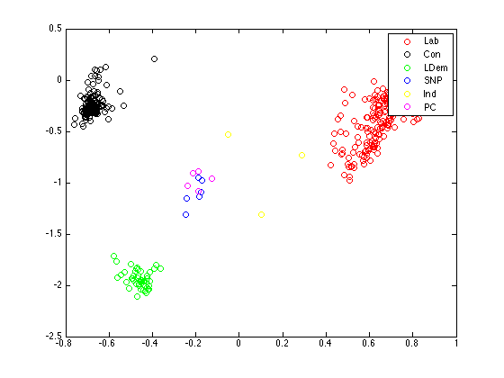
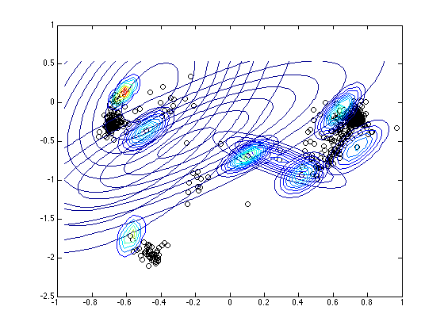
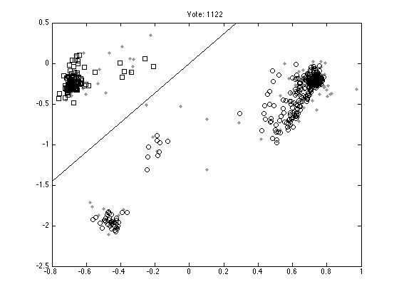
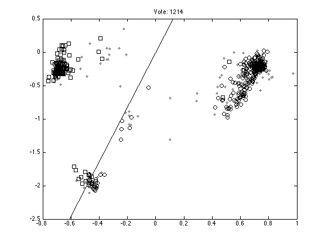
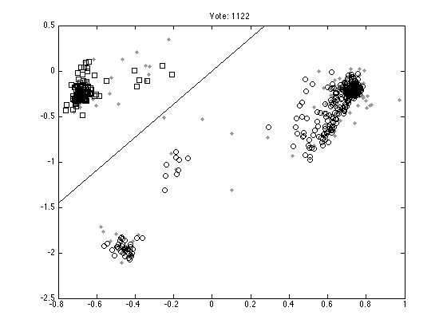
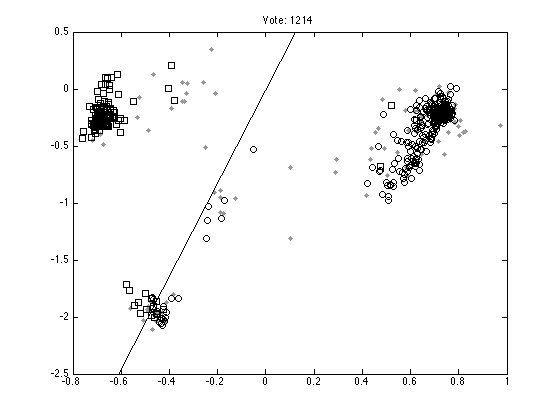

Contents
mpvis.m
From A First Course in Machine Learning, Chapter 6. Simon Rogers, 01/11/11 [simon.rogers@glasgow.ac.uk] Visualising the MP data
clear all;close all; load ../data/parliament1997;
Firstly, do standard PCA
Y = X'; Y = Y - repmat(mean(Y,1),size(Y,1),1); N = size(Y,1); C = (1/N)*Y'*Y; [w,lam] = eigs(C);
Plot the projections
figure(1);hold off proj = Y*w(:,1:2); plot(proj(:,1),proj(:,2),'ko')

Plot the projections, coloured by parties
cols = {'ro','ko','go','bo','yo','mo'};
pa = {'Lab','Con','LDem','SNP','Ind','PC'};
figure(1);hold off
for i = 1:length(pa)
pos = find(strcmp(pa{i},party));
plot(proj(pos,1),proj(pos,2),cols{i});
hold on
end
legend(pa);

Plot number of votes versus distance from origin
s = sum(X'~=0,2); di = sum(proj.^2,2); figure(1);hold off plot(s,di,'k.','markersize',10); xlabel('Number of votes'); ylabel('Distance from origin in projection');

Use the variational probit algorithm
load ../data/parliament1997; Y = X'; D = 2; % Dimensionality of projection Z = (Y~=0); % Location of values [N,M] = size(Y); X = randn(N,D)*0.01; W = randn(M,D)*0.01; Q = zeros(N,M); a = repmat(-1e6,size(Q)); b = repmat(1e6,size(Q)); a(Y==1) = 0; b(Y==-1) = 0; xxt = zeros(D,D,N); for n = 1:N xxt(:,:,n) = X(n,:)'*X(n,:); end MaxIts = 100; for it = 1:MaxIts if rem(it,10)==0 fprintf('\nIt: %g',it); end % Update q xw = X*W'; ai = (a-xw); bi = (b-xw); Q = xw + ((normpdf(ai)-normpdf(bi))./(normcdf(bi)-normcdf(ai))); wdet = 0; wsum = 0; for m = 1:M temp = eye(D)+sum(xxt.*repmat(reshape(Z(:,m),[1,1,N]),... [D,D,1]),3); covw(:,:,m) = inv(temp); W(m,:) = covw(:,:,m)*sum(X.*repmat(Z(:,m).*(Q(:,m)),[1,D]),1)'; wwt(:,:,m) = covw(:,:,m) + W(m,:)'*W(m,:); end xdet = 0; xsum = 0; xwwx = 0; otherbit = 0; for n = 1:N temp = eye(D)+sum(wwt.*repmat(reshape(Z(n,:),[1,1,M])... ,[D,D,1]),3); covx(:,:,n) = inv(temp); X(n,:) = covx(:,:,n)*sum(W'.*repmat(Z(n,:).*(Q(n,:)),[D,1]),2); xxt(:,:,n) = covx(:,:,n) + X(n,:)'*X(n,:); end end
It: 10 It: 20 It: 30 It: 40 It: 50 It: 60 It: 70 It: 80 It: 90 It: 100
Plot the projections, coloured by parties
cols = {'ro','ko','go','bo','yo','mo'};
pa = {'Lab','Con','LDem','SNP','Ind','PC'};
figure(1);hold off
for i = 1:length(pa)
pos = find(strcmp(pa{i},party));
plot(X(pos,1),X(pos,2),cols{i});
hold on
end
legend(pa);
 Plot the projections with the ten most variable MPs
path(path,'../utilities'); figure(1);hold off plot(X(:,1),X(:,2),'ko') hold on detc = []; for n = 1:N detc(n) = det(covx(:,:,n)); end [detc I] = sort(detc,'descend'); xr = min(X(:,1))-0.2:0.05:max(X(:,1))+0.2; yr = min(X(:,2))-0.2:0.05:max(X(:,2))+0.2; for n = 1:10 pos = I(n); plot_2D_gauss(X(pos,:),covx(:,:,pos),xr,yr); end
Plot ten random votes
order = randperm(M); for n = 1:10 vote = order(n); figure(n);hold off % Those that don't vote pos = find(Y(:,vote)==0); plot(X(pos,1),X(pos,2),'k.','color',[0.6 0.6 0.6],'markersize',10); hold on % Those that vote 1 pos = find(Y(:,vote)==1); plot(X(pos,1),X(pos,2),'ks'); % Those that vote -1 pos = find(Y(:,vote)==-1); plot(X(pos,1),X(pos,2),'ko'); xl = xlim; yl = ylim; plot(xl,-xl*W(vote,1)/W(vote,2),'k'); ylim(yl); ti = sprintf('Vote: %g',vote); title(ti); end


  
 